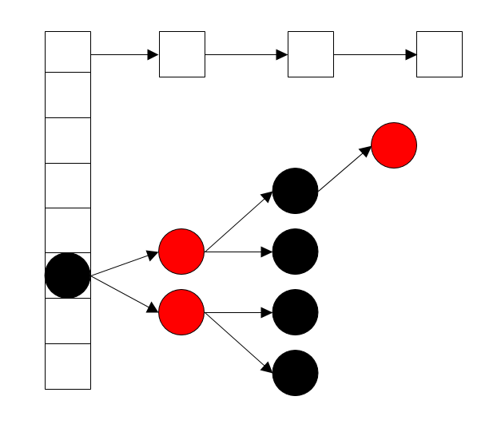
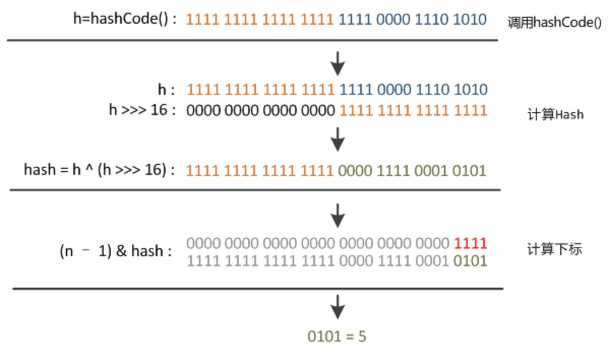
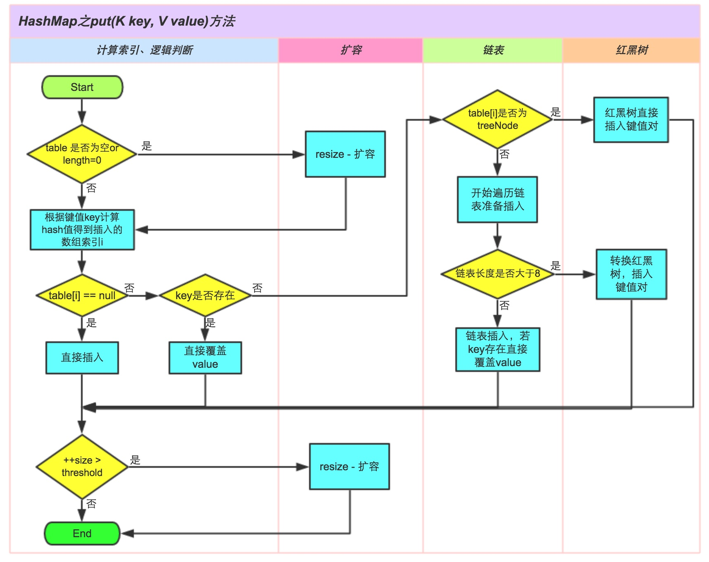

概述 Map 接口主要实现类有四个：HashMap 、Hashtable 、LinkedHashMap 和TreeMap ，类继承关系如下图：
其中HashMap 根据key的hashCode计算得到的哈希值存储数据，因此在访问数据时直接根据hash函数计算就可以得到数据在数组中的位置，访问速度很快，但是遍历顺序却是不确定的。
HashMap 最多只允许一个节点的key为null，允许多个节点的value为null。
HashMap 非线程安全。若要满足线程安全，可以使用Collections.synchronizedMap方法使HashMap 具有线程安全的能力，或者直接使用ConcurrentHashMap 。
HashMap 的实现底层数据结构 
如上图所示，HashMap 使用链地址法 来解决冲突问题。jdk8后HashMap使用数组+链表/红黑树 实现。
1 2 3 4 5 6 7 8 9 10 11 12 13 14 15 16 17 18 19 20 21 22 23 24 25 26 27 28 29 30 31 32 33 34 35 36 37 38 39 40 41 transient Node<K,V>[] table;static class Node <K ,V > implements Map .Entry <K ,V > final int hash; final K key; V value; Node<K,V> next; Node(int hash, K key, V value, Node<K,V> next) { this .hash = hash; this .key = key; this .value = value; this .next = next; } public final K getKey () return key; } public final V getValue () return value; } public final String toString () return key + "=" + value; } public final int hashCode () return Objects.hashCode(key) ^ Objects.hashCode(value); } public final V setValue (V newValue) V oldValue = value; value = newValue; return oldValue; } public final boolean equals (Object o) if (o == this ) return true ; if (o instanceof Map.Entry) { Map.Entry<?,?> e = (Map.Entry<?,?>)o; if (Objects.equals(key, e.getKey()) && Objects.equals(value, e.getValue())) return true ; } return false ; } }
HashMap 成员变量的含义1 2 3 4 5 6 7 8 9 10 11 12 13 14 15 16 17 18 19 20 21 22 23 24 25 26 27 28 29 30 31 32 33 34 35 36 37 38 39 40 static final int DEFAULT_INITIAL_CAPACITY = 1 << 4 ;static final int MAXIMUM_CAPACITY = 1 << 30 ;static final float DEFAULT_LOAD_FACTOR = 0.75f ;static final int TREEIFY_THRESHOLD = 8 ;static final int UNTREEIFY_THRESHOLD = 6 ;static final int MIN_TREEIFY_CAPACITY = 64 ;int threshold; transient int modCount;final float loadFactor;transient int size;transient Set<Map.Entry<K,V>> entrySet;
哈希方法 哈希函数用于确定节点在数组中的索引位置，其数学形式为index = hash(key)。jdk1.8实现源码如下：
1 2 3 4 static final int hash (Object key) int h; return (key == null ) ? 0 : (h = key.hashCode()) ^ (h >>> 16 ); }
由源码可知，hash函数的返回值并不是数组索引，因为数组长度并没有参与运算。实际上，获取索引的最后一步操作在获取节点的方法中实现，比如getNode()方法中的代码片段tab[(n - 1) & hash]，tab就是哈希数组，n为数组长度。
以上代码可分为三步：
h = key.hashCode() 取key的hashCode值 。hash = h ^ (h >>> 16) 无符号右移16bit(左边补0), 高位运算 。高16位异或运算结果为hashCode原来的值，低16位运算结果则是hashCode值的高16位和低16位异或所得。这么做可以在数组table的length比较小的时候，也能保证考虑到高低Bit都参与到Hash的计算中 ，同时不会有太大的开销，并且减小了冲突的可能。 index = (n - 1) & hash 相当于求模运算 ，但是效率比%更高。因为数组的大小永远是2的幂，所以n - 1是011..11（32位）的形式，任何非负整数（且 <= n-1）和它按位&都会等于其本身。
举个例子：

构造方法 1 2 3 4 5 6 7 8 9 10 11 12 13 14 15 16 17 18 19 20 21 22 23 24 25 26 27 public HashMap (int initialCapacity, float loadFactor) if (initialCapacity < 0 ) throw new IllegalArgumentException("Illegal initial capacity: " + initialCapacity); if (initialCapacity > MAXIMUM_CAPACITY) initialCapacity = MAXIMUM_CAPACITY; if (loadFactor <= 0 || Float.isNaN(loadFactor)) throw new IllegalArgumentException("Illegal load factor: " + loadFactor); this .loadFactor = loadFactor; this .threshold = tableSizeFor(initialCapacity); } public HashMap (int initialCapacity) this (initialCapacity, DEFAULT_LOAD_FACTOR); } public HashMap () this .loadFactor = DEFAULT_LOAD_FACTOR; } public HashMap (Map<? extends K, ? extends V> m) this .loadFactor = DEFAULT_LOAD_FACTOR; putMapEntries(m, false ); }
注意，构造方法中并没有创建哈希数组，初始化数组操作是通过resize()方法完成，而resize()方法是在放入键值对的时候才进行调用（初始化或者扩容2倍），比如putVal()方法。
构造方法中调用了tableSizeFor()来获取大于指定容量的最小的2的幂（在ArrayDeque 中已分析），其源代码如下：
1 2 3 4 5 6 7 8 9 static final int tableSizeFor (int cap) int n = cap - 1 ; n |= n >>> 1 ; n |= n >>> 2 ; n |= n >>> 4 ; n |= n >>> 8 ; n |= n >>> 16 ; return (n < 0 ) ? 1 : (n >= MAXIMUM_CAPACITY) ? MAXIMUM_CAPACITY : n + 1 ; }
扩容机制 1 2 3 4 5 6 7 8 9 10 11 12 13 14 15 16 17 18 19 20 21 22 23 24 25 26 27 28 29 30 31 32 33 34 35 36 37 38 39 40 41 42 43 44 45 46 47 48 49 50 51 52 53 54 55 56 57 58 59 60 61 62 63 64 65 66 67 68 69 70 71 72 73 74 75 76 77 78 79 80 81 82 83 84 85 86 87 88 89 90 91 92 93 94 95 96 97 98 final Node<K,V>[] resize() { Node<K,V>[] oldTab = table; int oldCap = (oldTab == null ) ? 0 : oldTab.length; int oldThr = threshold; int newCap, newThr = 0 ; if (oldCap > 0 ) { if (oldCap >= MAXIMUM_CAPACITY) { threshold = Integer.MAX_VALUE; return oldTab; } else if ((newCap = oldCap << 1 ) < MAXIMUM_CAPACITY && oldCap >= DEFAULT_INITIAL_CAPACITY) newThr = oldThr << 1 ; } else if (oldThr > 0 ) newCap = oldThr; else { newCap = DEFAULT_INITIAL_CAPACITY; newThr = (int )(DEFAULT_LOAD_FACTOR * DEFAULT_INITIAL_CAPACITY); } if (newThr == 0 ) { float ft = (float )newCap * loadFactor; newThr = (newCap < MAXIMUM_CAPACITY && ft < (float )MAXIMUM_CAPACITY ? (int )ft : Integer.MAX_VALUE); } threshold = newThr; @SuppressWarnings ({"rawtypes" ,"unchecked" }) Node<K,V>[] newTab = (Node<K,V>[])new Node[newCap]; table = newTab; if (oldTab != null ) { for (int j = 0 ; j < oldCap; ++j) { Node<K,V> e; if ((e = oldTab[j]) != null ) { oldTab[j] = null ; if (e.next == null ) newTab[e.hash & (newCap - 1 )] = e; else if (e instanceof TreeNode) ((TreeNode<K,V>)e).split(this , newTab, j, oldCap); else { Node<K,V> loHead = null , loTail = null ; Node<K,V> hiHead = null , hiTail = null ; Node<K,V> next; do { next = e.next; if ((e.hash & oldCap) == 0 ) { if (loTail == null ) loHead = e; else loTail.next = e; loTail = e; } else { if (hiTail == null ) hiHead = e; else hiTail.next = e; hiTail = e; } } while ((e = next) != null ); if (loTail != null ) { loTail.next = null ; newTab[j] = loHead; } if (hiTail != null ) { hiTail.next = null ; newTab[j + oldCap] = hiHead; } } } } } return newTab; }
由注释知，resize()方法用于初始化哈希数组或者扩容2倍。注意，扩容后元素的位置要么是在原位置，要么是在原位置再移动单倍容量位移的位置。
常用方法分析 put() 该方法的流程图如下：

判断table是否为空，空则调用resize()创建数组
计算index，并判断该处是否为null，为null则直接创建节点，并转向6。
不为null则判断首个元素的key是否和传入的key一致，一致则直接覆盖value
不一致则判断该链为红黑树。
该链为链表则遍历，遍历过程判断链表长度>=8转红黑树处理；不转红黑树则进行链表插入，判断，key已经存在则直接覆盖value
添加节点后判断是否超过阈值threshold，是则扩容
1 2 3 4 5 6 7 8 9 10 11 12 13 14 15 16 17 18 19 20 21 22 23 24 25 26 27 28 29 30 31 32 33 34 35 36 37 38 39 40 41 42 43 44 45 46 47 48 49 50 51 52 53 54 55 56 57 58 59 60 61 62 63 public V put (K key, V value) return putVal(hash(key), key, value, false , true ); } final V putVal (int hash, K key, V value, boolean onlyIfAbsent, boolean evict) Node<K,V>[] tab; Node<K,V> p; int n, i; if ((tab = table) == null || (n = tab.length) == 0 ) n = (tab = resize()).length; if ((p = tab[i = (n - 1 ) & hash]) == null ) tab[i] = newNode(hash, key, value, null ); else { Node<K,V> e; K k; if (p.hash == hash && ((k = p.key) == key || (key != null && key.equals(k)))) e = p; else if (p instanceof TreeNode) e = ((TreeNode<K,V>)p).putTreeVal(this , tab, hash, key, value); else { for (int binCount = 0 ; ; ++binCount) { if ((e = p.next) == null ) { p.next = newNode(hash, key, value, null ); if (binCount >= TREEIFY_THRESHOLD - 1 ) treeifyBin(tab, hash); break ; } if (e.hash == hash && ((k = e.key) == key || (key != null && key.equals(k)))) break ; p = e; } } if (e != null ) { V oldValue = e.value; if (!onlyIfAbsent || oldValue == null ) e.value = value; afterNodeAccess(e); return oldValue; } } ++modCount; if (++size > threshold) resize(); afterNodeInsertion(evict); return null ; }
其他常用方法：
size()：获取总节点个数isEmpty()：判断是否为空containsKey()：判断是否包含指定keyget()：获取指定key节点的valueremove()：移除指定key的节点keySet()：获取包含所有key的SetentrySet()：获取包含所有节点的Set
小结
扩容特别耗性能，所以在使用HashMap的时候，估算map的大小，初始化的时候给一个大致的数值，避免map进行频繁的扩容。
负载因子可以修改，也可以大于1，但是建议不要轻易修改，除非情况非常特殊。
HashMap是线程不安全的，不要在并发的环境中同时操作HashMap，建议使用ConcurrentHashMap。
JDK1.8引入红黑树大程度优化了HashMap的性能。
参考：https://zhuanlan.zhihu.com/p/21673805
http://irfen.me/java1-8-hashmap/